La decouverte de l'histoire de Montreuil
l'iut de montreuil vous invite à vivre une belle épopée
à la découverte de son histoire et de son partimoine culturel.
Que vous soyez en famille, en couple ou entre amis, venez découvrir à votre rythme l'histoire de Montreuil et toutes ses
richesses le long d’un parcours guidé. notre site web a pour but de vous simplifier l'organisation du guidage lors de votre parcours.
carte de l'itineraire :
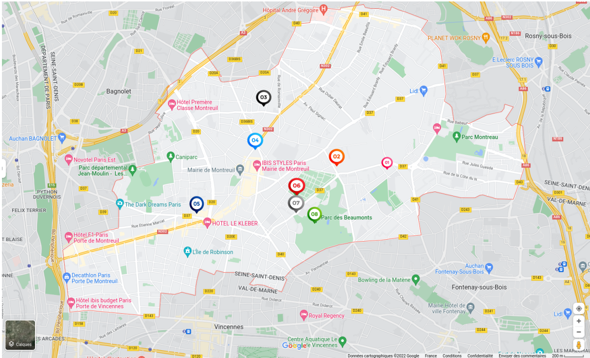
IUT
Mur à Pêche
Fresque
Eglise St Pierre St Paul
Hommage à la Résistance
Mairie de Montreuil et la place de Montreuil
Monument aux morts
Fresques
Statue Wang Kequing le calligraphe Fu Mi
Parc des Beaumonts
Montreuil la 4ème ville la plus grande d'île de France. La ville est peuplé depuis le néolithique. Le nom de la ville vient du chevalier Morard de Montreuil qui fût le premier seigneur vassal du roi.
Au fil des siècles le village prend de plus en plus d'ampleur et devient au XIIème siècle un lieu de prédilection pour le haut clergé.
Lors de la fin de la seconde guerre mondiale Montreuil fût la première ville a être libéré par plusieurs centaines de membres de la Résistance française.
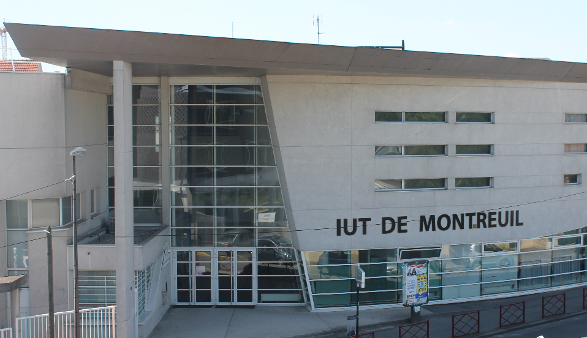
L’institut Universitaire Technologique de Montreuil créé en 1998 est un IUT proposant 4 formations. Elle contient 750 étudiants une trentaine,
quarantaine d’enseignants chercheurs et d’enseignants du second degré et plus de 150 enseignants vacataires venant du milieu professionnel.
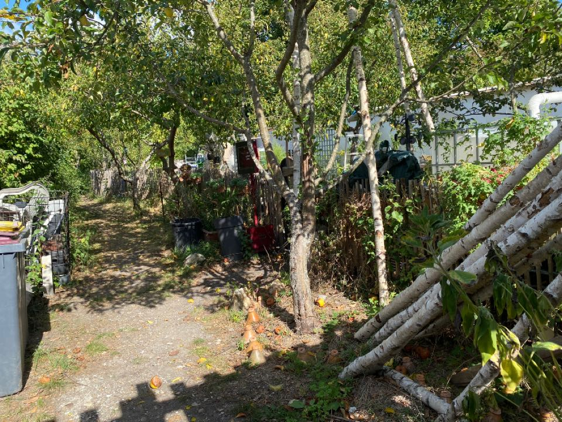
2. Mûr à Pêche
Les murs à pêches créés à partir du XVIIème siècle se développèrent jusqu’au XIXème Siècle pour couvrir 17millions de fruits.
Les murs ont une hauteur d’environs 3mètres. Pour s’adapter au terrain du plateau, les variétés de pêchers étaient
greffées sur des amandiers porte-greffes
Les pêches de Montreuil devinrent célèbre car au XVIIème siècle le roi Louis XIV fit importer ces pêches à la cours.
La reine d’Angleterre et même les tsars de Russie firent venir des pêches de Montreuil.
3. fresque
Jean Baptiste Colin alias JBC est un artiste français qui utilise des couleurs chaudes et des éléments
végétaux dans ses fresques. Ce choix rappelle l'importance des tropiques dans l'imaginaire de l'artiste, fruit de
ses nombreux voyages en Amérique latine:
Sur le mur de cet immeuble de cité, il nous propose le portrait géant, de 10 étages de hauteur, de Frantz
Fanon.
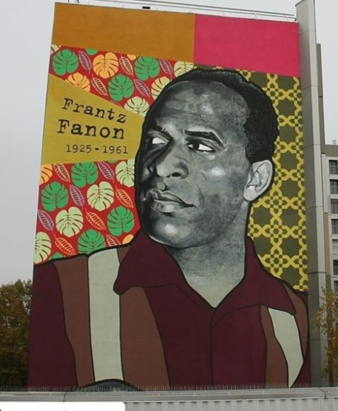
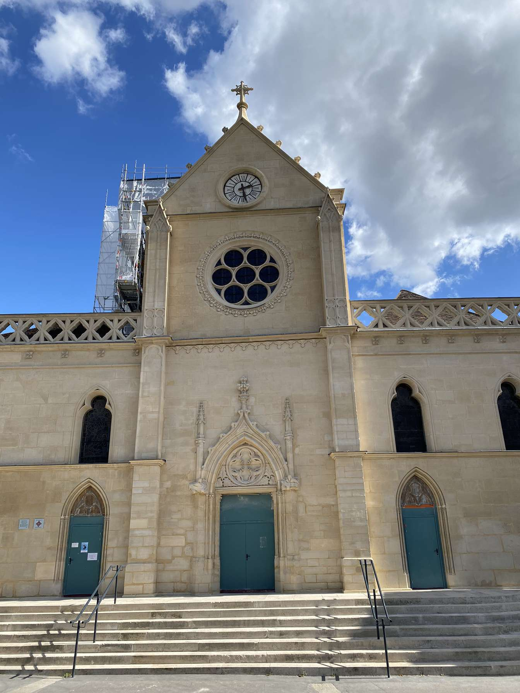
4. Eglise Saint-Pierre et Saint-Paul
L'église Saint-Pierre et Saint-Paul est une église catholique
La partie la plus ancienne de l’édifice, le chœur, date de la fin du XIIème et du début du XIIIème siècle.
5. Hommage à la Résistance
La statue Hommage à la Résistance créé par l’artiste americaine Caroline Lee
est une statue érigée en 1982. Elle est faite d’acier inoxydable et de granit noir et blanc.
Elle domine du haut de ses 12m50 la place de la Croix de Chavaux.
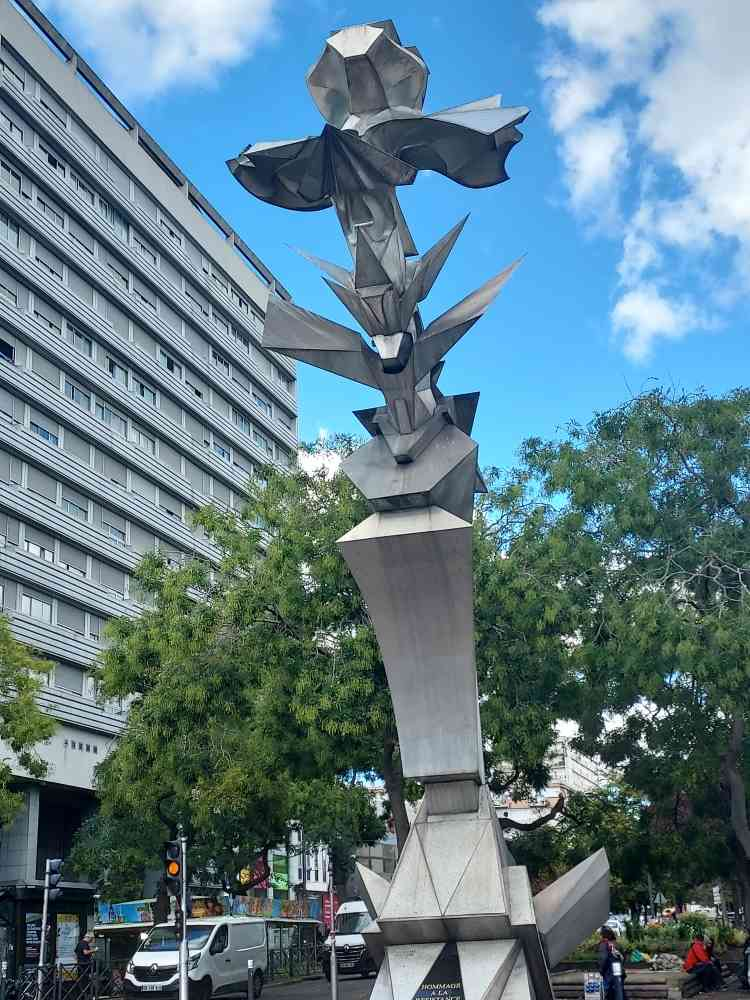
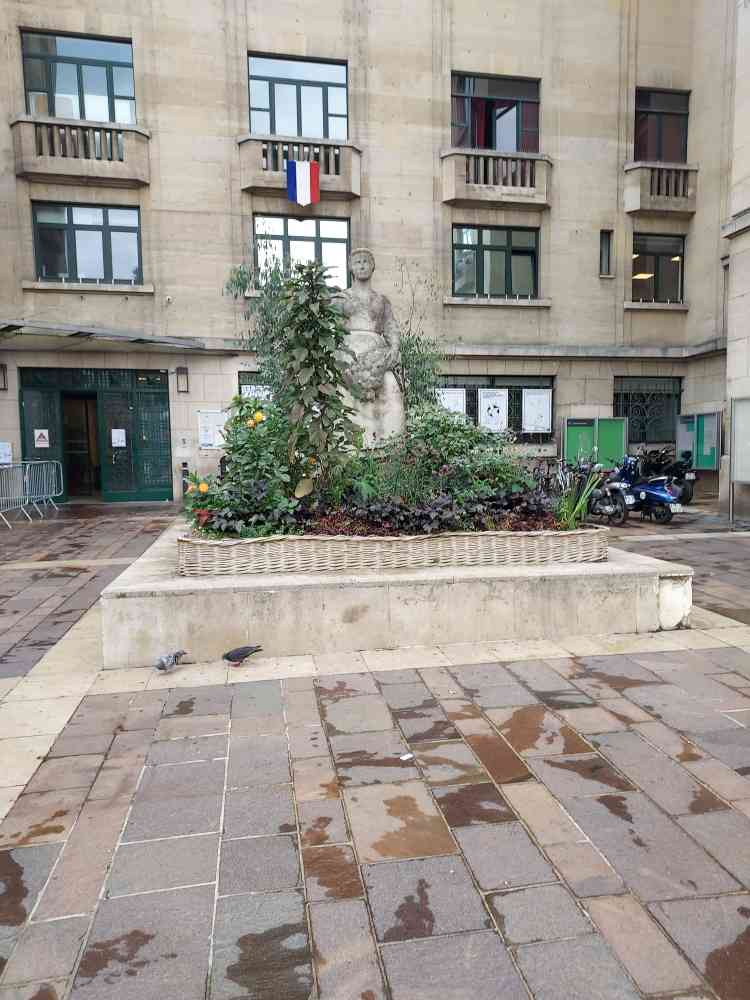
6. Mairie de Montreuil
Au début du XIXe siècle, le siège de la municipalité est hébergé dans une maison communale ; en 1825, naît un projet d'acquisition de la maison Maupas,
rue du Milieu (rue Victor-Hugo) pour la transformer en hôtel de mairie ; en 1840, la maison, acquise de la veuve Maupas, est aménagée par l'architecte Molinos (elle abrite aussi la gendarmerie).
En 1852, un arrêté est pris pour la création de la place Girard, vaste place de plan carré entourée de quatre rangs de marronniers.
7. Monument aux morts
Le monument aux morts fût Inaugurée en octobre 1927, cette oeuvre est due à l'architecte Albert Tournaire et au sculpteur Charles Breton.
Il rend hommage aux héros et martyrs des 2 guerres mondiales.
Au centre se trouve une femme ailée symbole de la victoire.
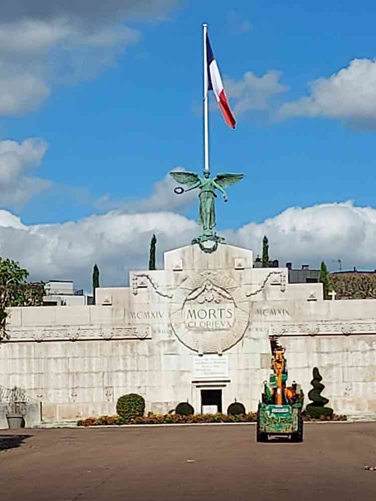
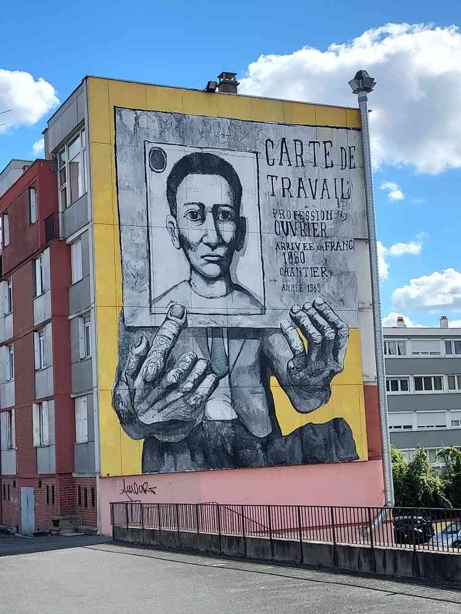
8. fresque
A l'occasion de la « Quinzaine d'éducation et d'actions contre le racisme et l'antisémitisme » de la ville de
Montreuil, deux fresques ont été peintes pour rendre hommage au chibanis , ces exilés du Maghreb venus en
métropole travailler et participer à la croissance de la France.
9. statue wang kequing
Jean Baptiste Colin alias JBC est un artiste français qui utilise des couleurs chaudes et des éléments
végétaux dans ses fresques. Ce choix rappelle l'importance des tropiques dans l'imaginaire de l'artiste, fruit de
ses nombreux voyages en Amérique latine:
Sur le mur de cet immeuble de cité, il nous propose le portrait géant, de 10 étages de hauteur, de Frantz
Fanon.
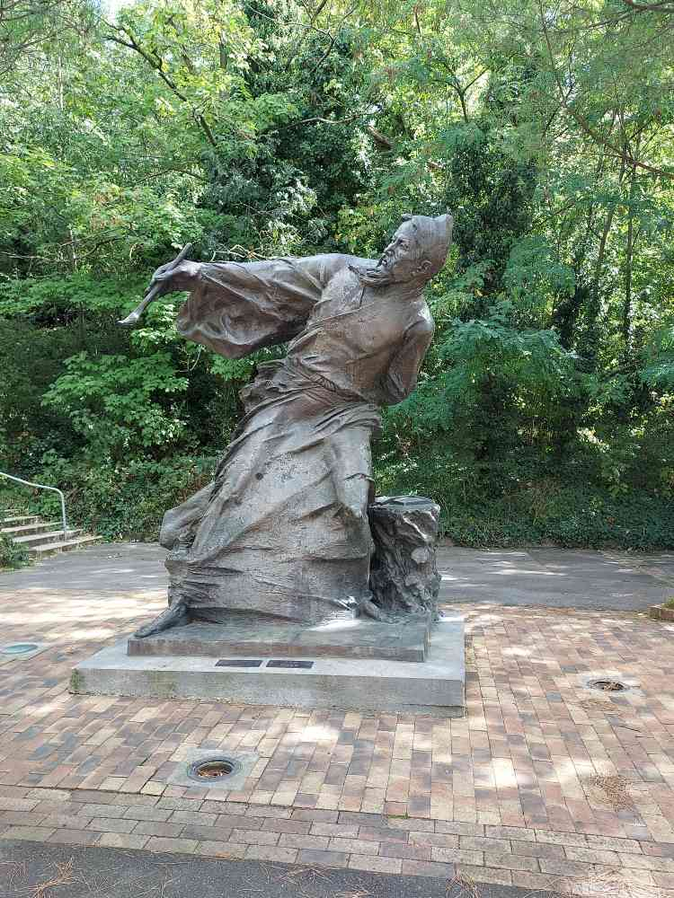
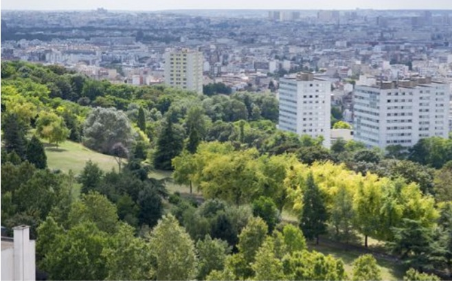
9. Parc des Beaumonts
Parc des beaumonts , il est dans la ville de montreuil et assez proche de l’IUT. Si l’envie vous prend d’aller vous
reposer ou vous baladez pendant les pauses (surtout en été). Le parcs est très verdoyant. Crée dans les années 1980
il abrite de nombreux grands arbres et 120 espèces d’oiseaux.